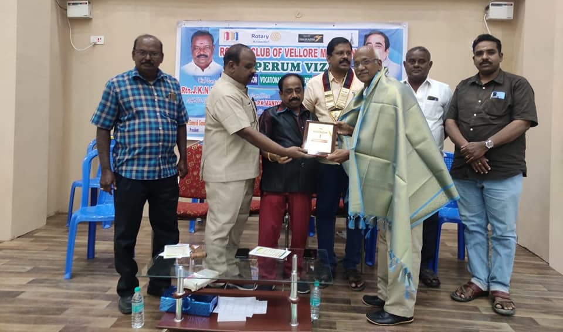
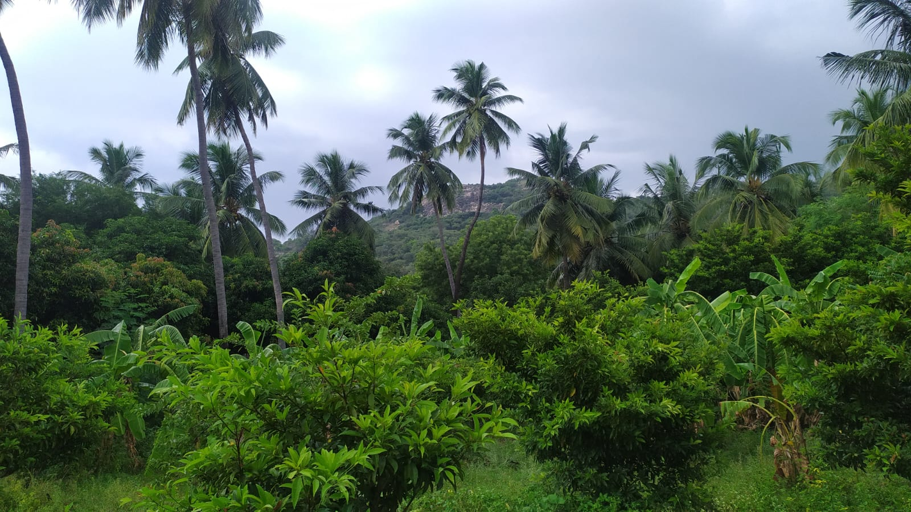
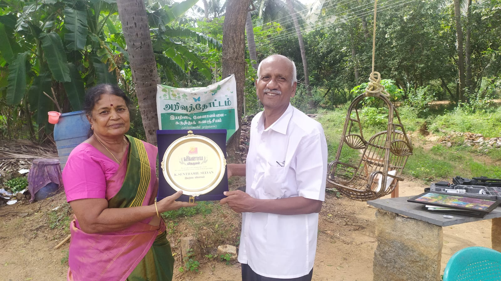

வணக்கம்...!
ARIVUTHOTTAM.ORG என்னும் இந்த இணைய தளத்திற்கு தங்களை வரவேற்பதில் மகிழ்ச்சி அடைகிறோம்.
"அறிவுத்தோட்டம்” ஓர் கருத்துக் களஞ்சியம்.
இரண்டு தளத்தில் நீங்கள் பயணிக்கலாம்.
ஒன்று ”அறிவுக்கோர் சிறுகளம்”
மற்றொன்று”அறிவார்ந்த விளைநிலம்”.
முதல் தளத்தில்:
அறிவியல் சார்ந்த , சமூகம் சார்ந்த அனுபவங்கள் கிடைக்கும்.
சமூக மாற்றத்துக்கான புதிய கருத்துக்கள்,
புதுமையான எண்ணங்கள்,
மாற்று திட்டங்கள் இந்த தளத்தில் பகிரப்படும்.
சமூகத்தை முன்னேற்ற பாதையில் அழைக்கும் மாற்றுக் கருத்துக்கள் கிடைக்கும்.
கல்வியில் ஆரோக்கியத்தில் நடைபெறும் மாற்றுத் திட்டங்கள் தேடலாம். அரசு மற்றும் பல அமைப்புகளின் முயற்சிகளும் அதன் படிப்பினைகளும் இடம் பெறும்.
நிலைத்தகு வளர்ச்சிக்கான அறிவியலார்ந்த வழிமுறைகள் முன்வைக்கப்படும் . சுற்றுச் சூழல் கருத்துக்களும் கிடைக்கும்.
அறிவியல் தொழில்நுட்பம் மற்றும் செயற்கை நுண்ணறிவு எட்டியுள்ள புதிய உச்சங்கள் அறிய கருத்துக்களாகும், விஞ்ஞானிகள் மற்றும் அறிஞர்களின் உரைகளாகவும் கிடைக்கும்.
இரண்டாம் தளத்தில்:
அறிவார்ந்த விளைநிலம்
இயற்கை விவசாயம் இதில் வேர்ப்பிடித்துள்ளது.
மண்ணையும் மக்களையும் காக்க இயற்கை விவசாயம் தவிர்க்க முடியாதது என்பதற்கான அறிவியல் சார்ந்த அனுபவம் சார்ந்த வழிமுறைகள் படர்ந்துள்ளது.பல ஆய்வுக் கட்டுரைகளும் இடம் பிடித்துள்ளன.
அறிவுத்தோட்டம் வேலூர் அருகில் உள்ள இயற்கை விவசாயப் பண்ணை. இதில் கடந்த 12 ஆண்டுகளாக நடைபெற்று வரும் விவசாயிகள், மாணவர்கள் மற்றும் பொதுமக்களுக்கான சந்திப்புகளின் தொகுப்புகள் இடம்பெறும்.
இயற்கை விவசாய விலை பொருட்கள் நேரடியாக மக்களிடம் விற்பனை செய்ய உருவாக்கப்பட்ட
“ மக்கள் நலச் சந்தை” தொடர் செயல்பாடுகள் இடம்பெறும்.
இயற்கை விவசாயம் பொருட்களுக்கான பல்வேறு சந்தைகள் மற்றும் உணவு திருவிழாக்கள் இடம் பெறும்.
மக்கள் நலச் சந்தையோடு இணைந்த ”விவசாய தொழில் முனைவோர் மகளிர் இணையம்”
குறித்தும் மதிப்பு கூட்டுதலில் அதன் முயற்சிகள் மற்றும் சந்தைப்படுத்தும் யுத்திகள் இடம் பெறும்.
விவசாயிகளை ஒருங்கிணைக்கும் ”மண் நல மையம்” செயல்பாடுகள் அறியலாம்.
கிராம மையத்திற்கான வழிகாட்டுதல்கள் கிடைக்கும் .
மிக முக்கியமாக விவசாயத்தில் இளைஞர்கள் பங்கேற்பு குறித்தும் ஆக்கப்பூர்வமான திட்டங்களும் இடம்பெறும்.
தேடத் தேட அளவற்றவைகளை அடையலாம் .
சிறந்த வலைதளங்களின் இணைப்பு
புத்தகங்களின் அறிமுகம் தொடர்புகள் கிடைக்கும் .
புதிய புதிய சிந்தனைகளுக்கு வலைத்தளம் காத்திருக்கிறது.
ஆக்கப்பூர்வமான உங்கள் சிந்தனைகளையும் பகிர இடம் உருவாக்கப்படும் .
வலைதளம் ஒரு கடல்.
நீங்கள் தான் மூழ்கி உங்களுக்கான முத்தெடுக்க வேண்டும் .
வாருங்கள் விரிந்த பரந்த சிந்தனைகளுடன்…… இனிதாய் இணைந்து பயணிப்போம்.
வாழ்த்துக்களுடன்.
கு. செந்தமிழ் செல்வன், நிறுவனர்
பல ஆண்டுகளுக்களாக பராமரிப்பின்றி கிடந்த நிலம் வீட்டு மனைகளாக மாற்றப்பட காந்திருந்தது. அழிந்து கொண்டிருந்த நிலம் கடந்த 12 ஆண்டுகளில் . நூறு சதவீதம் இயற்கை வேளாண்மை மூலம் பூஞ்சோலை ஆகியுள்ளது.
“இயற்கை வேளாண்மை இயல்பானதே, இலாபகரமானதே”
என பறை சாற்றி விவசாயிகளுக்கு நம்பிக்கையூட்டுகிறது.
பள்ளி மற்றும் கல்லூரி மாணவர்கள் ஆர்வமுடன் வந்து பார்த்து களித்து விவசாயம் பற்றி கேட்டு அறிந்து செல்கிறார்கள். விவசாயமே அறியாத அவர்கள் உற்சாகத்துடன் கேட்டு அறிவது புதிய தலைமுறையினரைப் மீதான நம்பிக்கை துளிர்க்கிறது.
நிறைந்து வழியும் இதன் மலர்ச்சியினை கேட்டு அறிந்து காவேரி ,பாலிமர், மெகா, ஜெயா தொலைக்காட்சியினர் அறிவுத் தோட்ட பசுமைக் காட்சிகளை ஒளிபரப்பினர். ரசாயனங்கள் கலக்காத இயற்கைவழி முறைகளை அறிவியல் அணுகு முறைகளை மாநிலத்தின் பல பகுதியிலிருந்து விவசாயிகள் கேட்டறிவதும் நேரில் வந்து பார்ப்பதுமாக உள்ளனர்
அறிவுத்தோட்ட்த்தில் அப்படி என்னதான் உள்ளது?
♦ பசுமை நிறைந்த கத்தரி, தக்காளி, பச்சை மிளகாய் என
தோட்டப் பயிர்கள், வளம் கொழித்த குளுமையும் அமைதியுமான மாந்தோப்பு
ஓங்கி வளர்ந்த தென்னை மரங்கள் தோப்பாக
♦ தொட்டாலே மணக்கும் எலுமிச்சை மரங்கள்
♦ சப்போட்டா, நெல்லி, ஆரஞ்சு, மாதுளை , சீத்தா, சாத்துக்குடி, பப்பாளி பழ மரங்களாக தோட்டத்தில்
♦ முகப்பில் வரவேற்கும் பூந்தோட்டம்: ரோஜா, மல்லிகை, முல்லை, சாமந்தி, பட்ரோஸ், செம்பருத்தி மற்றும் பலவகை சிறுமலர்களின் கூட்டம்
♦ தோட்ட்த்தின் அரணாக புங்கை, வேப்ப மரங்கள் மற்றும் பல வகை மரங்கள் , வேலிகளுக்கு துணையாக காகிதப்பூக்கள்
♦ முகப்பில் கூட்டம் நடத்த அரங்கம் அமைத்து அழைக்கும் மரங்களின் குடை பிடிப்பு
♦ மூலிகைச் செடிகள் சிறப்பு கவனத்துடன் தனியாக பாத்திகள். துளசி, தூதுவலை, வல்லாரை, முடக்கறுத்தான், கல்யாண முருங்கை, சிறு குறிஞ்ஞான் என 100 வகைகளுக்கு மேல்
♦ பசும்தாள் உரம் ,மண்புழு உரம், பஞ்சகாவியா தயாரிப்பு
♦ நவீன தொழில்நுட்ப சொட்டுநீர் பாசனம்
♦ ஒருங்கிணைந்த பண்ணையத்தின் பகுதியாக கோழிப்பண்னை
வருபவர்களுக்கு விளையாட்டுகளுடன் பயிற்சிகளும் தரப்படுகிறது
உணவும் தோட்டத்திலேயே தயாரித்து வழங்கவும் ஏற்பாடு உள்ளது